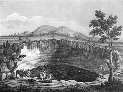

Pozzo Santullo
Pozzo d'Antullo
Useful Information
| Location: | Frosinone, Lazio. From Alatri follow SP248 to Collepardo, in Collepardo keep left on SP246 to Vico Nel Lazio, Pozzo Santullo is located at the road, about 800m north of the town. |
| Open: |
APR to SEP daily 11-17:30, last entry 17. OCT to MAR Sat, Sun 11-17:30, last entry 17. [2018] |
| Fee: |
Adults EUR 3. [2018] |
| Classification: |
 Doline or sink Doline or sink
|
| Light: | n/a. |
| Dimension: | D=145-110m, VR=70m. |
| Guided tours: | self guided |
| Photography: | allowed |
| Accessibility: | No |
| Bibliography: | |
| Address: | Tel: +39-0 |
| As far as we know this information was accurate when it was published (see years in brackets), but may have changed since then. Please check rates and details directly with the companies in question if you need more recent info. |
|
History
| 1858 | visited by Ferdinand Gregorovius. |
Description
|  |
|---|
| Image: The Well of Antullus or Santullo or San Tullo, engraving from 1846 |
{kind=link}
Pozzo Santullo is a sink hole - a collapse doline - which is between 40m and 70m deep, and has a circumference of 300m. The huge pothole is not circular, but oval in shape, about 145m long and 110m wide. The walls are steep, there is no trail to the bottom, as the wall is allways vertical or even overhanging. On the overhanging parts you can see huge old stalactites, a sign that this structure is the collapsed chamber of a cave. Dried by the sunlight and because of the south Italian climate they are quite dry and do not grow any more. Some of the stalagmites are not vertical, they have grown in a certain angle. This is the result of a strong and constant air flow during the growth. There is a footpath along the rim of the pothole, with various outlooks, but it is more a trail made by the feet of the visitors, not an official trail. Be careful as there is no fence or safety measure, and do not step on protruding parts of the rim, as they might collapse from your weigth.
An impressive description of the sink hole was written by Ferdinand Gregorovius, a famous German scolar and traveller, who visited this place in 1858. The original German text he wrote about this event in his book Wanderjahre in Italien (Years of Travelling in Italy) is linked below. He describes the huge depression and tells, that the local inhabitants told him a story about a lion on the ground. But it was just a joke, as they used the bottom as a meadow for their goats. They lowered him into the depression with a long rope, and later pulled him back out. Probably the same way they got the goats down and back up.
The legend tells, that this area once was a large round barn. When the people worked in it, although it was a high holyday of the Virgin Mary, she got so angry, that she opened the ground which swallowed the whole barn. If we assume that Virgin Mary is not that old-testamentarian, we can guess that the legend might have a true core of a different kind. As far as we know, when the collapse happened is not known, but if it happened during the Bronze Age, and probably some settlement was actually swallowed, its easy to understand that the legend was told over millennia. And the ancient story was tranformed into this christianized legend during Christianization, when people tried to give a Christian reason for any unexplainable event.
The Pozzo Santullo has a cave opening at the bottom. This cave was explored and it is the same cave system which is developed into a ahow cave at the other end. The show cave is called Grotta di Collepardo, and its located in a gorge on the southern side of the town Collepardo. So the main cave passage actually crosses the town underground. The show cave is the lower entrace.
The cave and the doline were rather famous and so many travellers of the 17th century, mostly north European nobles and naturalists, were fascinated by this place and explored it. At the end of the 19th century the cave system was completely explored and the more scientific approaches of the 20th century cavers revealed no further facts. To see list of the early explorers, actually a who is who of the 19th century, can be found on the show cave page linked below.
We visited the site in 2001, and there was no restriction to get to the doline. When we revisited the website in 2018 it told about open hours and a fee. We are not sure if this is for guided tours, and self guided access is still free, or if they fenced the doline. Its not really a problem, as you will want to see both sites, and with the EUR 3 ticket from the Pozzo you get a EUR 2 reduction on the show cave.
- See also
 Grotta di Collepardo
Grotta di Collepardo Ferdinand Gregorovius: Wanderjahre in Italien excerpt from a travelogue, (
Ferdinand Gregorovius: Wanderjahre in Italien excerpt from a travelogue, ( )
) Search Google for "Pozzo d'Antullo"
Search Google for "Pozzo d'Antullo" Google Earth Placemark
Google Earth Placemark Pozzo d'Antullo
Pozzo d'Antullo  (visited: 20-Aug-2018)
(visited: 20-Aug-2018) GROTTA DI COLLEPARDO - POZZO D'ANTULLO, official website. ()
GROTTA DI COLLEPARDO - POZZO D'ANTULLO, official website. ()- I Sinkholes e l’Uomo. (visited: 20-Aug-2018)